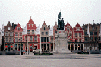
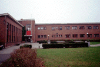
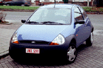
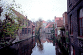
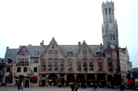
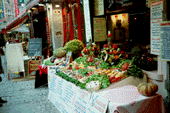
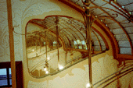

Belguim(97/11/21-12/1)
ビールコレクションは、こちら。
Bruxellesについて、先ず電車でBruggeまで行きました。

Bruggeと言えば、先ずマルクト広場。確かに綺麗な色彩。かわいらしい建物です。天気が悪い（ヨーロッパの冬はいつもこんな感じですね）のでちょっと寂しい感じでした。からっと晴れていればまた印象も違ったのだと思います。

この町のYH。建物も大きいし、部屋もYHとしては、綺麗な方でした。しかし、宿泊しているのは１０人にも満たないようでした。冬のヨーロッパはどうも淋しいですね。また、中にパブがあるのもBelguimらしかったのですが、ビールの種類がちょっと少なく思いました。

街角で見かけたFord。日本で言えばさしずめマーチクラスでしょうか？かなりデザインが気に入りました。マツダ辺りが国内販売したら結構売れると思うのですが、どうでしょう？

街角至る所にこのような景色が残っています。開発しようにも、町中水路で土地がずたずたになっており、そうそういじれない感じです。だからこそ、町並みが残っているのかも知れません。

Burg広場。
ここより、Bruxellesに成ります。

Bouchers通りのレストラン

Musee Horta（オルタ美術館）
Last update: May 6 1998